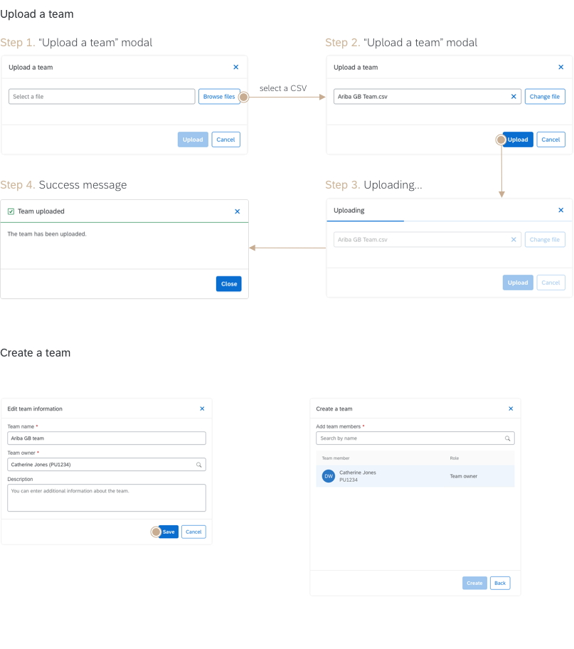
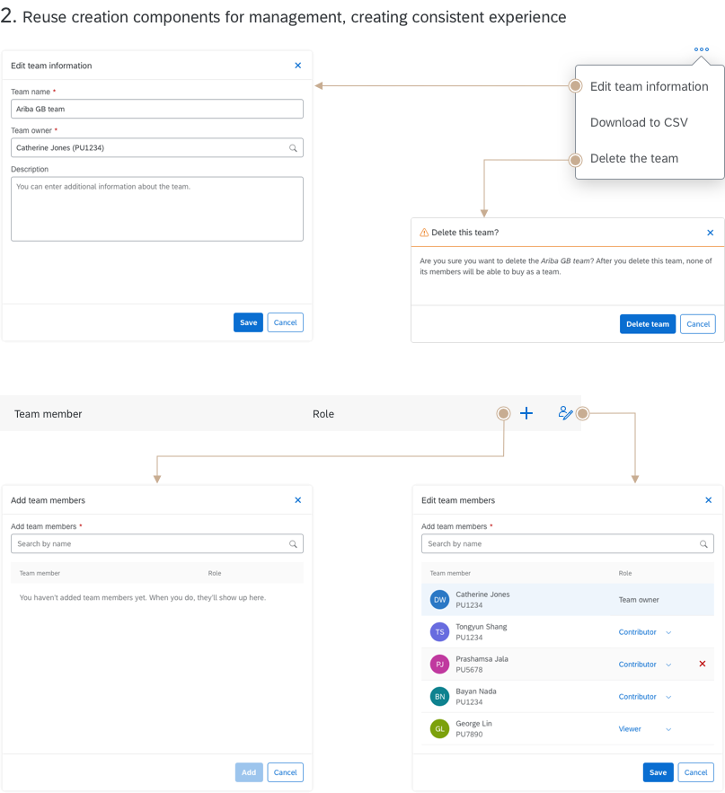
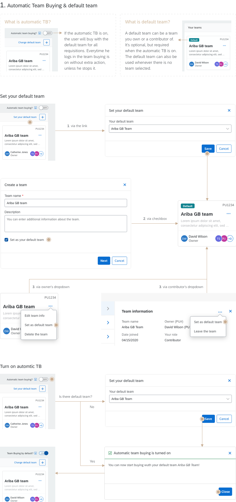

Team Buying Experience
Makes team collaboration in procurement possible
Project overview
The product
Guided Buying(GB) guides employees through buying process
Everyone has used Amazon to purchase personal items. But if you need to buy work-related materials following specific guidelines, a professional procurement tool is required. Guided Buying(GB) is such a buying platform that provides guided procurement experience for employees to buy materials and services.
GB's users includes both professional and casual buyers. Professional buyers buy frequently for the company. Causal buyers buy occasionally.
The feature
Contribute to the same requisitions with your team
Team Buying is a collaborative feature that allows multiple users to work on the same requisition. Now, buyers can create a team of experts in different fields and assign roles to each team member, and everyone will have access and pool their knowledge to the requisition.
My role
As the sole designer, I designed the end-to-end experience from creation and management, to buying and receiving. I collaborated with the researcher to define questions and analyze findings, with PMs on project scope and requirements, with visual designer to create new components, and with engineers to tackle technical challenges.
Design Process

Understand
The problems
Current GB solutions allow users to buy goods and services for themselves or on behalf of an employee/company code but do not support multiple users to work on the same requisition or request. Therefore, requesters have to work in shifts, and specific requests require round-the-clock attention. Or once a requester is on leave or users need contribution from other stakeholders, the existing requisitions have to be taken over by the central service team.

The objectives
After hosting two Customer Engagement Initiative workshop in October 2019, we gathered the clients' primary goals of this collaborative feature.
-
Objective 1.
Make the procurement lightweight and transparent within the organizations, allowing employees to easily pool their knowledge and resources without professional buyers(self-service); -
Objective 2.
Cover collaboration over the entire process-from management to buying to receiving, and adaptive to all features and flows- while complying with rigorous company rules.
Research
The product team drafted the first version of feature requirements based on the current product engine of GB - P2P(Procure-to-Pay). The core functionalities already exist in P2P, but not sufficient enough to serve for GB use cases.
The research work started with investigation of P2P. At the same time, we conducted comparative analysis of existing team collaborative tools. And later, we sent out surveys for questions need to be addressed and use cases to be validated.

GB dependencies
Investigate P2P
There are four scenarios I looked into when investigating P2P: 1) create and manage teams; 2) buy with a team; 3) join a team requisition; 4) receive with a team. Here are some insights generated from all the findings.

Comparative Analysis
We conducted comparative analysis of some collaborative tools, either communication channels or collaboration document/project, including Slack, Invision, Microsoft Team, Google Docs, etc. Here are some insights:

Survey
We sent out a survey to clients to address unresolved questions and elaborations on their previous use cases and received 38 responses. Here are some insights:
of customers would like to turn on team buying from the start
would change the settings(turn on/off team buying) in later process.
it's unnecessary to have any pre-approval process to indicate "ready for submission"
of users would like to receive items/services by individuals just as all the other receivings
Decisions
Initial design
In the initial design, we only need to include team buying and receiving stories. Since they are the core of this feature and team management can be accessed in P2P.
User stories
Since the team management is in P2P, we will have to follow the availabilities and restrictions. In P2P logic, users can only own one team but can be team members of multiple teams. However, they can only start a requisition with the team they own.

Design
In a GB requisition flow, there are 5 main stages:
1. shop -> 2. checkout -> 3. send for approval -> 4. approved -> 5. PO generated -> 6. confirm & ship -> 7. receive
In this section, you can see the critical screens of requester flow and team members' flow. On the left side is the highlighted widgets of each step.


Requirement changes
After the initial design, we expanded the scope and add team management story. So I revisited some studies we conducted earlier, and here are some new requirements and updated user stories:
1. Make the feature more powerful than P2P, allowing users to have more than one team, and the flexibility to leave teams, etc.
2. Add "admin" role. According to the survey, "69% of users think teams should be predefined by cost center/purchase unit, for example," and only admin is in charge of the configurations.
3. Add "viewer" role. According to the survey, "71% of users saw this feature "as a means of approval/review/monitor of a request, and add transparency of requests created by others."

Iterations
I made multiple iterations based on the feedback from design reviews, content, and visual checks. We also conducted one follow-up research survey with clients to clarify questions and validate the use cases that came up during the design. In this section, I'm going to walk you through some critical changes I made: admin's team management page, end-user's team management page, team buying flow, and team receiving flow.
Story 1. Admin uploads a CSV file to create a team


Story 2. End-user team management page


Story 3. Shop with a team


New System Structure

Final Design
We started the implementation in June 2020. And we've had daily stand-ups and weekly scrum meetings to understand technical considerations and keep development closely aligned with the design updates.The design is becoming more fleshed out after each review(design, content, visual) and validation(technical) with complete interactions, edge cases, different states, notifications, feedback modals, etc.
In this section, I'm going to walk you through all the main user stories we have in the Team Buying feature.
Story 1.
Admin team management
Admin access "Manage teams" page through Admin page where they configure GB. Ususally admin tool is very busy and hard to manage. Here are some highlights how I made team management easy:
- Support team creation via both CSV uploading and UI;
- Consistent creating and mamanging experience, and also internally aligned with end-user management page;
- Bulk actions for the admin to download or delete multiple teams.
Prototype






Story 2.
End-user team management
End users access "Manage your teams" through the dropdown under the profile icon. Here are the highlights of end-user management:
- Provide "automatic team buying" feature for expert users who purchase with teams 95% of the time;
- Divide teams owned by the user and participated in two sections. And use different elements to create visual hierarchy as well as consumer-facing products' feeling;
- Use the same components to create a consistent management experience, aligning with the admin management page.
Prototype
Reflection
The impact
This feature introduced the first "team" feature into GB, which reduces the redundancies and workarounds, and boosts efficiency and adds transparency to the requisition process. For the feature itself, Team Buying reduces the cost of customers hiring experts to only focus on requisitions for the teams and makes it available to any employees with certain access. At the same time, the feature can rollout to be a future team concept framework, being built into chat, procurement workspace, on behalf of, delegation, etc. And this is only the first step.
The challenge
Firstly, understand the pain points without direct access to end-users is always the hardest for 2B products. Secondly, technical dependencies are a unique challenge for GB. The limitations of P2P and Sourcing engines restrict what GB could achieve and build. However, we maximized and grew this feature with the best we could as a team. We hosted CEI workshops, conducted surveys, etc., trying to understand the real problems. And at the same time, we made many innovative changes that could potentially influence the future roadmap.
Next steps
We didn't solve some pain points in the first phase, which we'd love to focus on as the enhancements.
1. According to the survey, "54% of users would like to define/edit team members on a request by request basis." We now support users to select the team they want to buy with but don't allow modifications to team members.
2. According to the survey, "34% of users would like to receive items/service as a team, and 23% prefer to receive by individuals, and 12% think it should be configurable." However, we only support individual receiving now.
3. We only allow the users to see the team owner's catalog items due to some companies' policies. However, this limits users from different departments to contribute their knowledge. The next step would be to work with other companies with less restricted policies and figure out how to expand its capabilities.